HELLO
AILabTW · AI造物所 開張
一個人
＋AI，
每週造
一個工具。
@ailabtw
1/5
HELLO
為什麼開始
店家每天
被
重複的小事
卡住。
提醒預約、排價目表、回同樣的訊息。
這些事不需要請工程師，
一個人加上 AI 就做得出來。
@ailabtw
2/5
HELLO
你會在這裡看到
MON
每週實驗
一個新的小 App Demo，開放試用
WED
製作拆解
用了哪些 AI 工具、花幾小時、卡在哪
FRI
許願池
你說痛點，票數最高的就造出來
SUN
公開數據
使用人數、營收、做錯的決定
@ailabtw
3/5

HELLO
三個承諾
數據全公開
包括失敗，也包括賺了多少錢。
不誇大、不買粉
工具好不好用，你自己試了算。
做一次，給很多人用
每個工具都為整個行業而做。
@ailabtw
4/5
HELLO
第一個願望由你決定
工作上
最煩的一件事
是什麼？
留言告訴我，或到個人檔案的連結許願。
追蹤 AI造物所，一起看它長大。
連結在個人檔案 →
@ailabtw
5/5